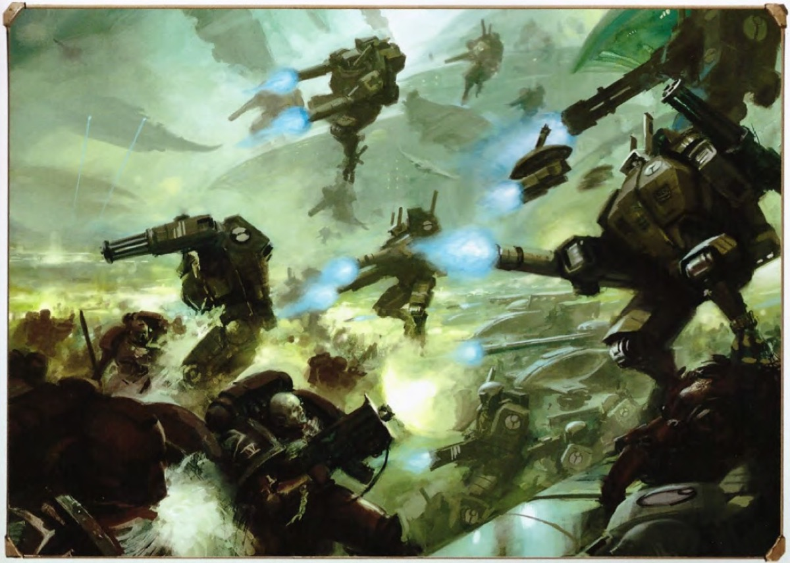

Damocles Gulf Crusade
| Damocles Gulf Crusade | |
|---|---|
| First war between the Imperium and the T'au Empire | |
 T'au battlesuit teams engaging Space Marines of the crusade, from an Ordo Xenos pict-capture | |
| Date | 742–745.M41 |
| Location | Damocles Gulf, Lithesh Sector, Eastern Fringe, Ultima Segmentum; the Hydass, Sy'l'kell, Viss'el and Dal'yth systems |
| Result | Stalemate. The crusade withdrew by agreement after the battle for Dal'yth Prime and the news of the Tyranid invasion; the T'au regained their lost sept worlds |
| Belligerents | |
| Imperium of Mankind | T'au Empire T'au Empire Fire Caste armies Water Caste diplomats Earth Caste engineers Kroot mercenaries Rebel human colonies |
| Commanders and leaders | |
| Cardinal Esau Gurney General Wendall Gauge Admiral Jallaque Captain Rumann (Iron Hands) Inquisitor Grand Inquisitor Fidus Kryptman (by astropathic order) | The Ethereals of the Tau'va Fire Caste commanders of Dal'yth |
| Strength | |
| A dozen capital ships; five provisional Space Marine companies from about eleven Chapters; nineteen Astra Militarum regiments, seven from Brimlock | Not recorded; a defence of several sept worlds with orbital stations, fleets and Kroot warspheres |
| Casualties and losses | |
| Heavy among the Brimlock regiments and the crusade fleet, which lost four capital ships and fourteen escorts at Pra'yen alone. T'au losses were lower in the fleet, higher on the colony worlds | |
The Damocles Gulf Crusade, or Damocles Crusade, was an Imperial campaign of 742–745.M41 against the T'au Empire, a young xenos power on the Imperium's eastern edge. It was the first war between the two, and the first time that the Imperium encountered the T'au in force. The crusade drove into T'au space across the Damocles Gulf, destroyed several of their outlying colonies and pushed on to the sept world of Dal'yth Prime. There it was halted, by the numbers and technology of the T'au and their Kroot allies, and fought to a bloody standstill. In late 745.M41 the crusade's commanders accepted a T'au offer of talks, and the Imperial fleet withdrew unmolested.[1][2]
The Imperium regarded the war as a stalemate that it had been forced to end by the need to meet another enemy. The T'au regarded it as the beginning of a long process. They had learned how the Imperium fought, and where it was weak. In the two centuries that followed they pushed further into the Eastern Fringe, and the Imperium learned, at far greater cost, that the T'au were not a passing xenos nuisance.[2]
Background
[edit]The T'au and the Gue'la
[edit]No one now knows when the two powers first made contact. The T'au, whose empire occupied a small region beyond the Damocles Gulf, met first the free captains, pirates and outcasts of the Imperium on its borders, and took them to be the whole of humanity. Their Water Caste diplomats opened trade with some of these. It took them some time to learn that these were the forgotten fringe of an empire that stretched across the galaxy. The Fire Caste, the T'au warrior caste, advocated war. The Ethereals, who rule the T'au, ruled otherwise. A direct war with a power of that size could destroy the T'au, so the Imperium was to be absorbed gradually into the T'au way, the Tau'va, or Greater Good.[1]
The Water Caste were to make alliances with dissident human factions on the borders, and over decades to win a hearing at the courts of a number of Imperial commanders. They did so. A number of human border worlds came to trade with the T'au in preference to the Imperium's own merchant cartels and Rogue Traders, and goods and technology that the Imperium forbids passed through their markets. When the second phase began, T'au envoys encouraged the governors of a score of worlds to declare themselves independent. The worlds that took that step were absorbed into the T'au Empire. They are the human worlds later known as the Farsight Enclaves.[1]
The decision to go to war
[edit]In the Imperial view the border sub-sectors of the Lithesh Sector had already been shaken by Aeldari pirate raids and warp storms. In 742.M41 the Ordo Hereticus, investigating several rebellious worlds, found evidence of T'au activity in the adjoining sectors, and the Ultima Segmentum Command resolved to put down the revolts and drive out the aliens. Cardinal Esau Gurney of Brimlock called for a crusade. The forces assembled for the purpose were a dozen capital ships of the Navy, five provisional companies of Space Marines drawn from about eleven Chapters, and nineteen regiments of the Astra Militarum, seven of them from Brimlock. It was a standard frontier crusade. Wherever the authority of the Imperium was challenged, the Imperium had exterminated the challenger.[1]
The crusade
[edit]Garrus, Kleist and Hydass
[edit]The crusade began by restoring Imperial rule in the rebellious colonies of Garrus and Kleist in the Timbra Sub-sector. Those who had dealt with the T'au were seized and tried at a special assize before the crusaders. It then entered T'au space, and made its first contact in the uninhabited Hydass system. Seven T'au cruiser-sized ships were sighted at the edge of the system, and the crusade fleet attacked. The T'au ships launched torpedo salvos at long range, breaking up the Imperial formation, and their escorts countered the bomber waves. The decisive attack came from a Space Marine strike cruiser and a squadron of Sword-class frigates, which got inside the T'au formation and discovered that the T'au ships lacked broadside firepower. One T'au ship was destroyed while its crew abandoned it. The rest withdrew.[1]
Sy'l'kell
[edit]The first ground war was fought on Sy'l'kell, an agri-world with about seven million T'au. The council of war appointed Captain Rumann of the Iron Hands to command the assault. The fleet bombarded the orbital station and the Iron Hands boarded and burned it. The Scythes of the Emperor Chapter set up a landing zone, and the 17th Brimlock Dragoons landed in support. The T'au response was a fast mechanised force with armoured vehicles whose grav-tanks, called Hammerheads, matched the Leman Russ, and the Dragoons suffered heavy losses when T'au battlesuits ambushed them in rolling country. The Ordo Tempestus's 4th Storm Trooper Company and the Scythes of the Emperor saved them. The T'au evacuated their best workers and dismantled their technology. When the 9th Brimlock Fusiliers landed, resistance collapsed, and the planet was declared cleansed.[1]
Viss'el
[edit]While the crusade planned its crossing of the Gulf, a force was sent to the Viss'el system, where the T'au had fishery colonies on an ice world. It had no strategic value. The Imperial ships bombarded the ice around the colonies and drowned them in flash floods.[1]
The Dal'yth campaign
[edit]
Pra'yen
[edit]After a journey of five months the crusade fleet arrived at the Dal'yth system in the Kendral Sub-sector. The outermost world, Pra'yen, was guarded by an orbital station that the Imperial fleet approached carelessly. Its heavy railguns crippled the Honour of Damlass with their first volley. The fleet broke formation as eleven T'au ships emerged from behind Pra'yen. The T'au concentrated their torpedoes on the light cruiser Regent Lakshimbai, which resisted until a bulkhead collapse set off her plasma drive. Then a Kroot warsphere powered up and moved on the troop transports, which scattered. Admiral Jallaque turned the Blade of Woe, a Retribution-class battleship, across its path and destroyed it with lance fire. The T'au fleet and station were destroyed, but the crusade had lost four capital ships and fourteen escorts. The Navy had come to respect the T'au as a fighting power.[1]
Dal'yth Prime
[edit]Some of the council wanted to turn back, but the prospect of assaulting a major T'au world was too tempting. Dal'yth Prime had three orbital stations, which the fleet destroyed cautiously, and the ground assault landed on the eastern seaboard of the largest continent. The T'au contested the drop with aircraft but could not stop it. The Imperial advance moved along an excellent road network and approached the city of Gel'bryn before the T'au formed a stable line. Missiles fired from beyond hills inflicted losses, and the T'au jump troops in cloaking fields attacked the spotters sent against them. The Imperial wedge broke into three spearheads. The Titans of the Legio Thanataris were countered by T'au Manta missile destroyers. The Rakarshan Rifles were countered by Kroot on the rooftops of Gel'bryn. The Space Marines of the Iron Hands, Ultramarines and Scythes of the Emperor were countered by the T'au heavy jump troops, and the front stabilised on a river twenty kilometres north of Gel'bryn.[1]
Operation Hydra and the withdrawal
[edit]General Wendall Gauge of the Astra Militarum dug in. The T'au, who fought better at night, advanced to extreme range and fired at the Imperial positions, then withdrew at dawn. Space Marine patrols with their enhanced senses helped to counter it, but losses mounted. The crusade fleet was too damaged to guard its transports, let alone give air cover, and each local day brought more T'au to the front. Gauge concluded that the crusade had found a major T'au population centre and had not the strength for it. Reinforcements that had been promised did not come. Inquisitor Grand of the Ordo Xenos demanded evacuation and Exterminatus. There was strong opposition, particularly from the Astartes, since the Imperial forces had found the T'au honourable enemies. While the council argued, Gauge acted. He formed his Titans and the Brimlock regiments for an assault along the right flank, to trap the T'au against the sea. The strike force took its objective, a town with a bridge across the river, with complete surprise, and fought a running battle through the suburbs of Dal'yth that ended five kilometres from closing the trap. Overnight the T'au disengaged and fell back, and by morning they were gone. The starport outside Gel'bryn was taken.[1]
It was now possible to evacuate. Resistance from the Inquisition and the Astartes was overruled by an astropathic order, received in late 745.M41, from Inquisitor Fidus Kryptman: all forces were to return to Brimlock at once. It reported the first Tyranid attacks on the Imperium. The T'au, who might have blockaded the crusade and trapped it on Dal'yth Prime, saw more advantage in offering talks. The crusade withdrew under flags of truce honoured by both sides, and the Fire Caste reclaimed the sept worlds that it had lost at the outset. At the same moment the Ultramarines were fighting Hive Fleet Behemoth at Macragge.[1][3]
Aftermath
[edit]The Imperium had learned to respect the T'au, and the T'au had learned the size and the bitterness of the galaxy they had thought was theirs. For the T'au Empire the lesson was that those who were rejected or disenfranchised by the Imperium could be turned, and that no power that consumed its own people could stand for ever before the Greater Good. The Ethereals' decision to avoid a total war was justified, in their view, by the result. The Fire Caste, for its part, had seen how the Imperium fought on open ground, and the experience was not lost on it.[1]
The Imperium treated the stalemate as a delay. Over the next two centuries it fought the T'au along the whole of the eastern fringe in a series of wars that cost it many worlds. Most of the humans of the Damocles Gulf were absorbed by the T'au, and are called the Gue'vesa in the T'au language. The worlds that had declared independence became the Farsight Enclaves, under a Commander that the Imperium has since hunted. Its legacy appears again in the opening of the Great Rift, when the war in the Damocles Gulf was among the events that Imperial scholars list as possible causes.[2][4]
Legacy
[edit]The Damocles Gulf Crusade is remembered chiefly as the war in which the Imperium first met an enemy that could not be defeated by the usual method of a frontier crusade, and in which it chose, with some bitterness, to leave the field. The Brimlock regiments, which bore the greater part of the ground fighting, were reduced to a fraction of their strength. The decision to withdraw, taken by General Gauge against the opposition of the Inquisition and the Astartes, has been argued over since. Some hold that it saved an army that would have been lost, and others that it left the T'au Empire free to grow.[2]
See also
[edit]Notes
[edit]References
[edit]- ^ a b c d e f g h i j k l Gauge, Wendall (c. 746.M41). Report of the Damocles Gulf Crusade to the Ultima Segmentum Command. Astra Militarum, Brimlock.
- ^ a b c d Codex Imperialis (rev. 980.M41). Adeptus Terra.
- ^ Kryptman, Fidus (c. 746.M41). Report on Hive Fleet Behemoth. Ordo Xenos (sealed).
- ^ Records of the Indomitus Crusade (ongoing). Office of the Lord Commander.